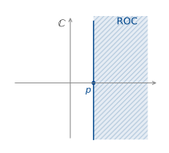
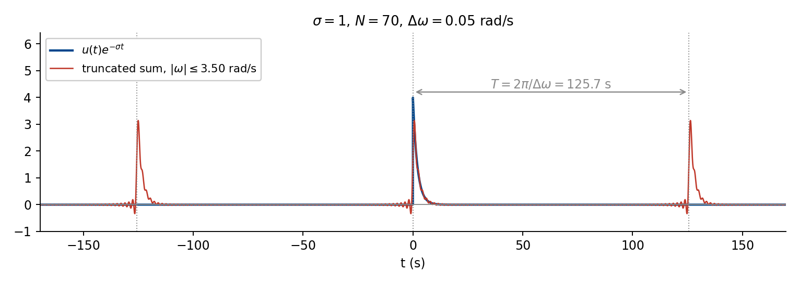
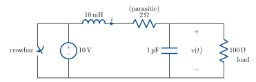
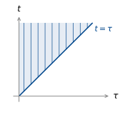

Week 8 — Lecture notes
The Laplace transform
Other formats:
📄 PDFLecture outline
- Motivation: unstable systems
- Making the Fourier transform converge — the bilateral Laplace transform.
- Least-squares approximation and inverse Laplace transform.
- Initial conditions and the unilateral Laplace transform.
- Example
- Laplace transform properties.
Motivation: unstable systems
Last week we saw that exponential and marginal stability can be determined from the system poles:
- poles in LHP: stable
- poles (non-repeated) on imaginary axis: marginally stable.
For a single left half plane pole, we have
\frac{1}{p + j\omega} \;\xrightarrow[\text{F.T.}]{\text{Inverse}}\; e^{-pt}H(t)
We would guess that, for a right half plane pole,
\frac{1}{-p + j\omega} \;\rightsquigarrow\; e^{pt}H(t).
But: The Fourier transform of e^{pt}H(t) is
\int_0^{\infty} e^{pt}e^{-j\omega t}\,\mathrm{d}t = \infty\ldots
We need a trick to make this converge, and that is the Laplace transform.
Remember what the Fourier transform is: for each \omega,
\int_{-\infty}^{\infty} u(t)e^{-j\omega t}\,\mathrm{d}t
projects u(t) onto e^{+j\omega t}.
If u(t) decays, this converges. If u(t) grows, it does not.
Making the Fourier transform converge: the bilateral Laplace transform
The trick in the Laplace transform is to change the basis function: choose a basis function that decays at least as fast as u(t) grows, then the projection converges.
For u(t) = e^{pt}H(t), what can we do?
Shift e^{j\omega t} to the right:
e^{(\sigma + j\omega)t} = e^{\sigma t}e^{j\omega t}.
Then the projection becomes
\int_{-\infty}^{\infty} e^{pt}e^{-\sigma t}e^{-j\omega t}H(t)\,\mathrm{d}t = \int_0^{\infty} e^{(p-\sigma)t}e^{-j\omega t}\,\mathrm{d}t.
If \sigma > p, this converges:
\begin{aligned} \int_0^{\infty} e^{(p-\sigma)t}e^{-j\omega t}\,\mathrm{d}t &= \left[\frac{-1}{\sigma - p + j\omega}\,e^{(p-\sigma-j\omega)t}\right]_0^{\infty} \\[8pt] &= \frac{1}{-p + \sigma + j\omega} \\[8pt] &= \frac{1}{-p + s}, \qquad \text{where } s = \sigma + j\omega. \end{aligned}
This shifted Fourier transform is called the bilateral Laplace transform:
\boxed{\; \mathcal{B}(u(t))(s) = \int_{-\infty}^{\infty} u(t)e^{-st}\,\mathrm{d}t \;}

\sigma > p defines the Region of Convergence (ROC), the set s \in \mathbb{C} such that, for a given u(t),
\int_{-\infty}^{\infty} u(t)e^{-st}\,\mathrm{d}t
converges.
For a fixed \sigma \in \text{ROC}, \mathcal{B} is the Fourier transform of the weighted signal u(t)e^{-\sigma t}. Fixing \omega, \mathcal{B} projects this weighted signal onto the basis function e^{+j\omega t}.
If the region of convergence contains the imaginary axis (the signal decays), then we can take \sigma = 0 and
\mathcal{B}(u) = \int_{-\infty}^{\infty} u(t)e^{-j\omega t}\,\mathrm{d}t
which is precisely the Fourier transform.
Least-squares approximation and the inverse Laplace transform
Given a signal u(t) and its Laplace transform U(s), as well as its region of convergence, we can find the corresponding time domain signal by fixing \sigma \in \text{ROC} and computing the inverse Fourier transform of the weighted signal u(t)e^{-\sigma t}.
Note first that the Fourier transform of u(t)e^{-\sigma t} is U(j\omega + \sigma) from the Fourier transform properties.
Now, taking the inverse Fourier transform,
u(t)e^{-\sigma t} = \frac{1}{2\pi}\int_{-\infty}^{\infty} U(j\omega + \sigma)\,e^{\,j\omega t}\,\mathrm{d}\omega.
Divide by e^{-\sigma t} to get
\boxed{\; u(t) = \frac{1}{2\pi}\int_{-\infty}^{\infty} U(j\omega + \sigma)\,e^{(\sigma + j\omega)t}\,\mathrm{d}\omega \;}
This is the Inverse Laplace Transform. Any \sigma \in \text{ROC} can be used.

Initial conditions and the unilateral Laplace transform
Bilateral refers to the fact that we integrate from t = -\infty to t = \infty. Often, however, we’re only interested in a system after we turn it on at t = 0, we don’t want to have to keep track of the infinite past. Also, the impulse response of a real system starts at t = 0 (that is, the system is causal, and the output depends only on the past, not the future). This motivates the unilateral Laplace transform, which only looks at what happens from t = 0^- = 0 - \varepsilon.
\boxed{\; \mathcal{L}(u(t)) = \int_{0^-}^{\infty} u(t)e^{-st}\,\mathrm{d}t = \mathcal{B}(u(t)H(t)), \;}
The second equality requires u continuous at 0.
This transform lets us account for initial conditions as well as inputs. Let’s see how by looking at the Laplace transform of the derivative.
\int_0^{\infty} \frac{\mathrm{d}}{\mathrm{d}t}u(t)\,e^{-st}\,\mathrm{d}t.
Integrate by parts:
= u(t)e^{-st}\Big|_0^{\infty} - \int_0^{\infty} -s\,u(t)e^{-st}\,\mathrm{d}t.
\lim_{t \to \infty} e^{-st} = 0 for s \in \text{ROC}, so we have
= -u(0) + s\,U(s).
What about the second derivative?
Let v(t) = \dfrac{\mathrm{d}}{\mathrm{d}t}u(t).
Then
\begin{aligned} \mathcal{L}(v(t)) &= -v(0) + s\,V(s) \\[6pt] &= -\frac{\mathrm{d}}{\mathrm{d}t}u(0) - s\,u(0) + s^2\,U(s). \end{aligned}
By induction,
\boxed{\; \mathcal{L}\left(u^{(n)}(t)\right) = -u^{(n-1)}(0) - s\,u^{(n-2)}(0) - \cdots - s^{n-1}u(0) + s^n\,U(s) \;}
As with the Fourier transform, we have a table of standard Laplace transforms. The derivations are very similar to those for the Fourier transforms.
| u(t) | U(s) | ROC |
|---|---|---|
| \delta(t) | 1 | all s |
| H(t) | \dfrac{1}{s} | \operatorname{Re}(s) > 0 |
| t\,H(t) | \dfrac{1}{s^2} | \operatorname{Re}(s) > 0 |
| e^{-at}H(t) | \dfrac{1}{s + a} | \operatorname{Re}(s) > -a |
| t\,e^{-at}H(t) | \dfrac{1}{(s + a)^2} | \operatorname{Re}(s) > -a |
| \cos(\omega_0 t)H(t) | \dfrac{s}{s^2 + \omega_0^2} | \operatorname{Re}(s) > 0 |
| \sin(\omega_0 t)H(t) | \dfrac{\omega_0}{s^2 + \omega_0^2} | \operatorname{Re}(s) > 0 |
| e^{-at}\cos(\omega_0 t)H(t) | \dfrac{s + a}{(s + a)^2 + \omega_0^2} | \operatorname{Re}(s) > -a |
| e^{-at}\sin(\omega_0 t)H(t) | \dfrac{\omega_0}{(s + a)^2 + \omega_0^2} | \operatorname{Re}(s) > -a |
Example

A crowbar is an overvoltage protector, which shorts the source if the load voltage exceeds a given threshold.
Suppose the circuit is at steady state and the crowbar is activated at t = 0. What is the capacitor voltage v(t) for t > 0?
The current splits through the capacitor and load:
i = C\dot{v} + \frac{v}{R_L}.
It is equal to the current through the inductor and resistor.
i = \frac{1}{R}v_R.
v_L = L\frac{\mathrm{d}}{\mathrm{d}t}i
KVL around the loop:
v(t) + v_L + v_R = 0.
Combining:
\begin{aligned} v + LC\ddot{v} + \frac{L}{R_L}\dot{v} + RC\dot{v} + \frac{R}{R_L}v &= 0 &&\textcolor{#C0392B}{\text{source is shorted}} \\[8pt] LC\ddot{v} + \left(\frac{L}{R_L} + RC\right)\dot{v} + \left(1 + \frac{R}{R_L}\right)v &= 0. \end{aligned}
Take the Laplace transform:
\begin{aligned} LC\left(-\dot{v}(0) - s\,v(0) + s^2V(s)\right) &+ \left(\frac{L}{R_L} + RC\right)\left(-v(0) + s\,V(s)\right) \\[4pt] &+ \left(1 + \frac{R}{R_L}\right)V(s) = 0. \end{aligned}
Circuit is at steady state at t = 0. At DC the inductor is a short and the capacitor carries no current, so the source drives R and R_L in series:
v(0) = 10\,\frac{R_L}{R + R_L} = 10 \times \frac{100}{102} = 9.804\,\mathrm{V}, \qquad i(0) = \frac{10}{R + R_L} = 98.04\,\mathrm{mA}.
The capacitor current is i(0) - v(0)/R_L = 0, so \dot{v}(0) = 0.
\begin{aligned} s^2LC\,V(s) + \left(\frac{L}{R_L} + RC\right)s\,V(s) + \left(1 + \frac{R}{R_L}\right)V(s) &= LCs\,v(0) + \left(\frac{L}{R_L} + RC\right)v(0) \end{aligned}
V(s) = \frac{LCs\,v(0) + \left(\dfrac{L}{R_L} + RC\right)v(0)} {s^2LC + \left(\dfrac{L}{R_L} + RC\right)s + \left(1 + \dfrac{R}{R_L}\right)}
We now want to inverse transform this expression by breaking it into parts that match entries in the Laplace transform table.
Normalise so the coefficient of s^2 is 1:
V(s) = \frac{v(0)\,s + v(0)\left(\dfrac{1}{CR_L} + \dfrac{R}{L}\right)} {s^2 + \left(\dfrac{1}{CR_L} + \dfrac{R}{L}\right)s + \left(\dfrac{1}{LC} + \dfrac{R}{R_L LC}\right)}
Denote
2\alpha = \frac{1}{R_L C} + \frac{R}{L}, \qquad \omega_0^2 = \frac{1 + R/R_L}{LC}.
With the values above, \alpha = 5100\,\mathrm{s}^{-1} and \omega_0 \approx 10100.
We now have
V(s) = \frac{v(0)\,s + 2\alpha\,v(0)}{s^2 + 2\alpha s + \omega_0^2}
Is the discriminant > 0 or < 0?
4\alpha^2 - 4\omega_0^2 = 4(\alpha - \omega_0)(\alpha + \omega_0).
\alpha < \omega_0, so the system is underdamped.
Complete the square in the denominator:
s^2 + 2\alpha s + \omega_0^2 = (s + \alpha)^2 + (\omega_0^2 - \alpha^2).
Let \omega^2 = \omega_0^2 - \alpha^2.
Then
\begin{aligned} V(s) &= \frac{v(0)(s + \alpha) + v(0)\,\alpha}{(s + \alpha)^2 + \omega^2} \\[10pt] &= \frac{v(0)(s + \alpha)}{(s + \alpha)^2 + \omega^2} + \frac{v(0)\,\alpha}{\omega}\,\frac{\omega}{(s + \alpha)^2 + \omega^2}. \end{aligned}
Now use the table entries
e^{-\alpha t}\cos\omega t \;\rightsquigarrow\; \frac{s + \alpha}{(s + \alpha)^2 + \omega^2}
and
e^{-\alpha t}\sin\omega t \;\rightsquigarrow\; \frac{\omega}{(s + \alpha)^2 + \omega^2}
to get
v(t) = e^{-\alpha t}\left(v(0)\cos\omega t + \frac{v(0)\,\alpha}{\omega}\sin\omega t\right)H(t).
With numbers,
v(t) = e^{-5100t}\left(9.804\cos 8717t + 5.736\sin 8717t\right)H(t).
Properties of the Laplace transform
The Laplace transform inherits many useful properties of the Fourier transform. We have already seen the derivative property. Let’s now check convolution.
Let y(t) = h(t) * u(t). Suppose h(t) = u(t) = 0 for t < 0.
\begin{aligned} h(t) * u(t) &= \int_{-\infty}^{\infty} h(t - \tau)u(\tau)\,\mathrm{d}\tau \\[6pt] &= \int_0^t h(t - \tau)u(\tau)\,\mathrm{d}\tau. \end{aligned}
\mathcal{L}\left(h(t) * u(t)\right) = \int_0^{\infty}\int_0^t h(t - \tau)u(\tau)\,\mathrm{d}\tau\; e^{-st}\,\mathrm{d}t.
If we are in the ROC of both signals, we can swap the order of integration.

= \int_0^{\infty}\int_{\tau}^{\infty} h(t - \tau)e^{-st}\,\mathrm{d}t\; u(\tau)\,\mathrm{d}\tau \qquad \textcolor{#C0392B}{\text{(allowed in the ROC)}}.
Let \mu = t - \tau.
\begin{aligned} \mathrm{d}\mu &= \mathrm{d}t \\[4pt] t = \infty &\;\Rightarrow\; \mu = \infty \\[4pt] t = \tau &\;\Rightarrow\; \mu = 0. \end{aligned}
\begin{aligned} &= \int_0^{\infty}\int_0^{\infty} h(\mu)e^{-s(\mu + \tau)}\,\mathrm{d}\mu\; u(\tau)\,\mathrm{d}\tau \\[8pt] &= \int_0^{\infty} h(\mu)e^{-s\mu}\,\mathrm{d}\mu \int_0^{\infty} u(\tau)e^{-s\tau}\,\mathrm{d}\tau \\[8pt] &= H(s)\,U(s). \end{aligned}
Integration
We can use the convolution property to get the Laplace transform of an integrator:
\begin{aligned} y(t) &= \int_0^t u(\tau)\,\mathrm{d}\tau \\[6pt] &= \int_0^{\infty} H(t - \tau)u(\tau)\,\mathrm{d}\tau \\[6pt] &= H * u. \end{aligned}
So Y(s) = H(s)U(s).
What is the Laplace transform of H(t)?
\begin{aligned} \int_0^{\infty} H(t)e^{-st}\,\mathrm{d}t &= \int_0^{\infty} e^{-st}\,\mathrm{d}t \\[6pt] &= \left.\frac{-1}{s}e^{-st}\right|_0^{\infty} = \frac{1}{s}. \end{aligned}
So
\int_0^t u(\tau)\,\mathrm{d}\tau \;\rightsquigarrow\; \frac{1}{s}U(s).
Other properties
| u(t) | U(s) | |
|---|---|---|
| linearity | \alpha u_1(t) + \beta u_2(t) | \alpha U_1(s) + \beta U_2(s) |
| time shift | u(t - \tau)H(t - \tau) | e^{-s\tau}U(s) |
| frequency shift | e^{at}u(t) | U(s - a) |
Initial value theorem
\mathcal{L}\left(\frac{\mathrm{d}}{\mathrm{d}t}u(t)\right)(s) = s\,U(s) - u(0).
So
s\,U(s) = u(0) + \int_0^{\infty} u'(t)e^{-st}\,\mathrm{d}t.
Now, if |u'(t)| \le Me^{ct} for some M, c > 0, the rightmost term \to 0 as s \to \infty along the real axis, so we have
\lim_{s \to \infty} s\,U(s) = u(0).
Final value theorem
Again take
s\,U(s) = u(0) + \int_0^{\infty} u'(t)e^{-st}\,\mathrm{d}t.
Let s \to 0 along the real axis. Then
\int_0^{\infty} u'(t)e^{-st}\,\mathrm{d}t = \int_0^{\infty} u'(t)\,\mathrm{d}t = \lim_{T \to \infty} u(T) - u(0).
So
\begin{aligned} \lim_{s \to 0} s\,U(s) &= \lim_{T \to \infty} u(T) - u(0) + u(0) \\[6pt] &= \lim_{T \to \infty} u(T), \quad \underline{\text{provided this limit exists}}. \end{aligned}